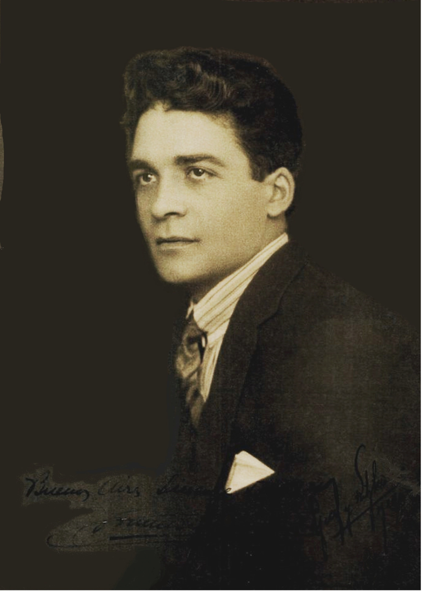

Francisco Salamone nació en 1898 en Leonforte, provincia de Enna, Italia. Poco tiempo después emigró a la Argentina junto a su familia. Su formación técnica comenzó en la Escuela Industrial Otto Krause, en la ciudad de Buenos Aires, donde se destacó por su desempeño académico y egresó en 1916 como técnico constructor. Posteriormente, en 1920, obtuvo el título de arquitecto e ingeniero civil en la Universidad Nacional de Córdoba.
Sus primeros proyectos datan del año 1935, marcando el inicio de una intensa actividad profesional ligada al desarrollo de obras públicas en distintos municipios de la provincia de Buenos Aires, impulsada por sus vínculos políticos. Su labor alcanzó gran notoriedad durante la gestión del gobernador Manuel Fresco (1936-1940), quien lo contrató para llevar adelante un ambicioso plan de infraestructura urbana y edilicia.
Entre las obras más relevantes de Salamone se destacan edificios municipales, escuelas, hospitales, cementerios, plazas y, de manera particular, mataderos, una tipología específica de la época. Estas construcciones, de variadas escalas y temáticas, introdujeron un nuevo lenguaje arquitectónico en localidades pequeñas y alejadas del centro urbano, como Carhué, Azul, Coronel Pringles, Laprida, Saldungaray y Lobería.
Francisco Salamone falleció en la ciudad de Buenos Aires en el año 1959, dejando un legado arquitectónico único en la historia de la obra pública argentina.
